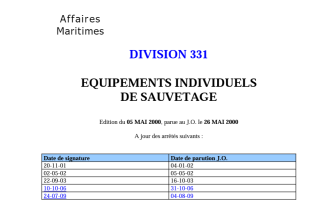
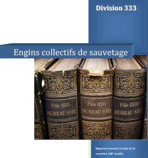

Recueil LSA
LSA signifie Life Safety Appliances : engins de sauvetage
Sujet
Le Recueil international de règles relatives aux engins de sauvetage (Recueil LSA) énonce des prescriptions techniques spécifiques applicables aux engins de sauvetage.
Il est obligatoire en vertu de la règle 34 de la convention SOLAS, qui dispose que tous les engins et dispositifs de sauvetage doivent être conformes aux prescriptions applicables du Recueil LSA.
Il est transcrit pour partie en droit français notamment dans les divisions 331 - 332 - 333

